|
BuddhaSasana Home Page |
Vietnamese, with Unicode Times font |
Bốn nơi Ðộng tâm
|
Lumbini - Hồ nơi Ðức Bồ Tát đản sanh |
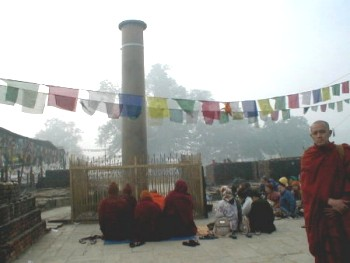 Lumbini - Trụ đá của vua Asoka |
|
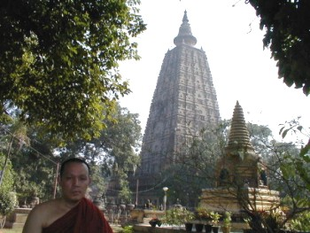 Bodh-Gaya - Nơi Bồ Tát thành đạo |
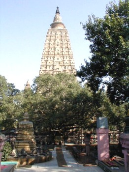 Bodh-Gaya - Bảo tháp |
|
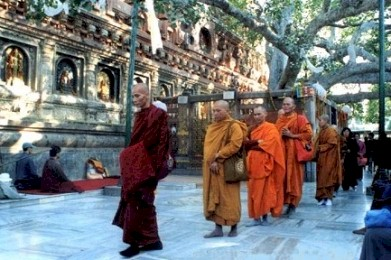
Cội bồ đề nơi Đức Phật Thành Đạo |
|
| 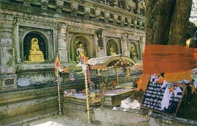 | |
|
Sarnath - Nơi Ðức Phật chuyển Pháp Luân |
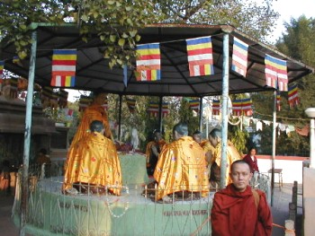 Sarnath - Nơi độ 5 anh em Ngài Kiều Trần Như |
|
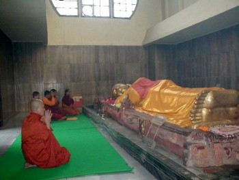 Kusinara - Nơi Ðức Phật nhập Niết bàn |
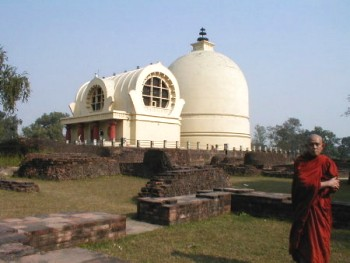 Kusinara - Chùa Niết bàn |
Source: Tỳ khưu Indacanda (Nguyệt Thiên), 2002
| 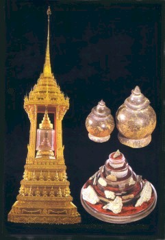 | 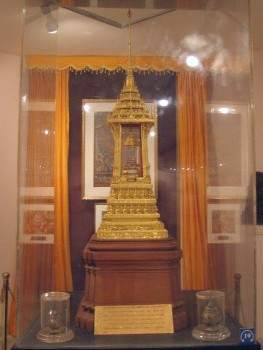 |
| 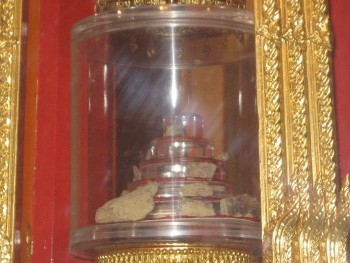 | 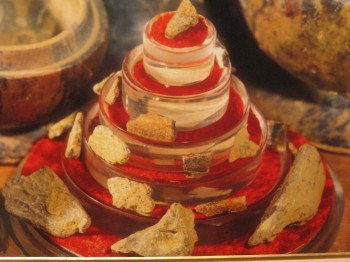 |
Xá lợi
Phật, Viện Bảo tàng Quốc gia Ấn Độ, Delhi
(Được tìm thấy vào năm 1898, tại tháp thờ xá lợi, làng Piprahwa, thành
Kapilavastu - Ca-tỳ-la-vệ)
Hành Hương Xứ Phật
Phạm Kim Khánh, 1998
|
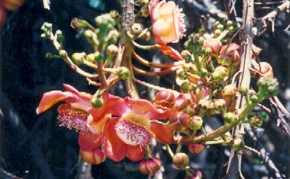 Hoa Long Thọ |
|
|
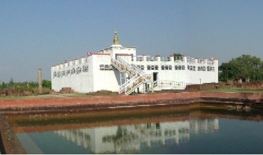 |
|
|
Chùa Maha-Bodhi, Bodh-Gaya |
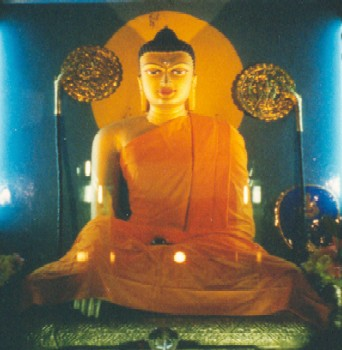 Tượng Phật bên trong chùa Maha-Bodhi |
|
Sarnath |
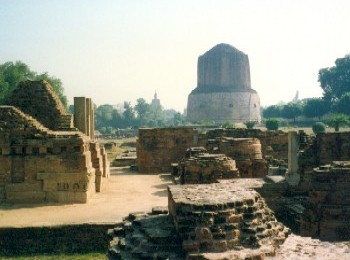 Sarnath |
|
Kusinara - Chùa Niết Bàn |
|
|
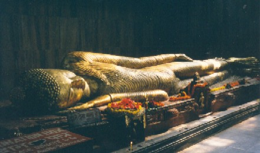 Tượng Phật bên trong chùa Niết Bàn |
|
| 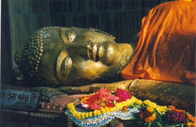 | |
|
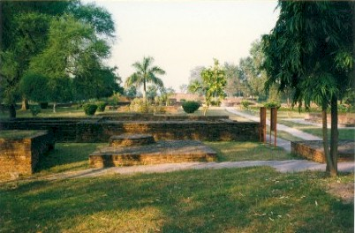 Kỳ Viên - Jetavana |
|
|
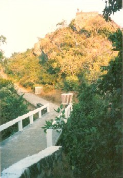 Núi Linh Thứu (Gijjhakuta) |
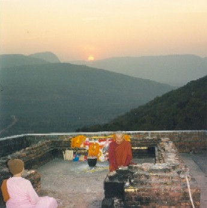 Trên đỉnh núi Linh Thứu |
|
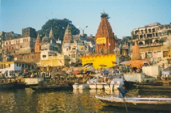 Sông Hằng (Gange) |
Sông Hằng (Gange) |
Chân thành cám ơn Bác Phạm Kim Khánh đã gửi tặng các ảnh vi
tính
(Bình Anson, 06-2004)
[Trở
về trang Thư Mục]
last updated: 27-11-2005